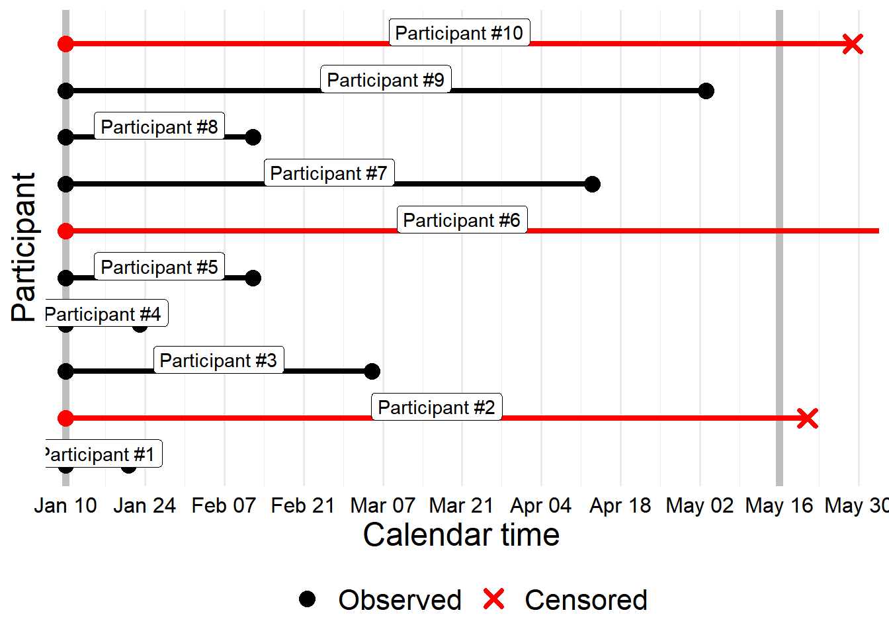
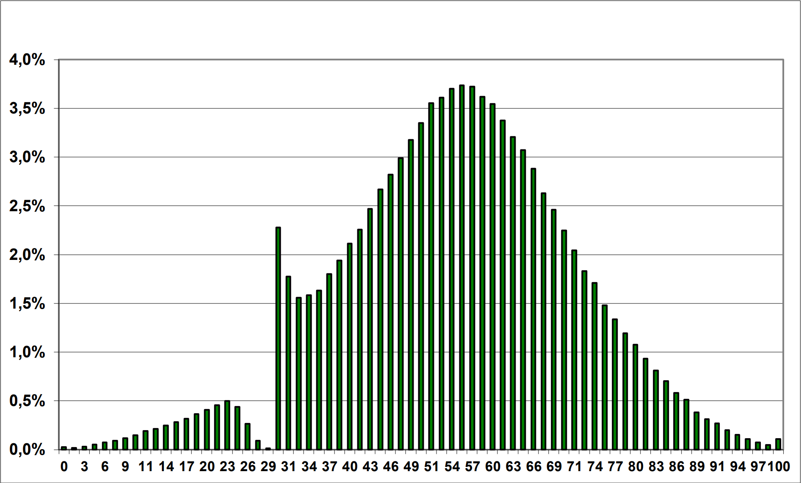

I needed to make some censored data plots for a presentation, and it turned out to be easier to write the material as a blog post first and then convert that into a presentation afterwards.
Author
Zane Billings
Published
October 30, 2023
Recently, I’ve been working a lot on censored data in the context of antibody measurements, which often have limits of detection or precision issues that can be treated as censored data problems. I’ve been working with my awesome lab group on a larger project about approaches for censored data analyses, but this blog post will cover the very basics. I needed to make a presentation for a seminar about this topic, and it turned out it was easier to write the blog post first and then convert it into a presentation.
Here are the learning goals for this blog post, and the motivating issues for me to write about. If I’ve done a decent job, by the end of this post, a diligent reader should be able to:
Explain what censored data is, and give an example of how censoring might occur;
List the types of censored data, and be able to identify these types in practical examples;
Write down a data generating model for censored data, and write down the likelihood for the censored variables;
Explain how censored data are handled in survival, tobit-type, and Bayesian models using the likelihood;
Identify pros and cons for frequentist and Bayesian approaches to handle censored data.
What is censored data?
Censoring is a type of data coarsening which occurs due to the way data are observed. Such data are only partially known, i.e., we know a range of values for a given data point, but not the exact value of that data point. The most common example in the literature occurs in survival analysis. Notably, when data are censored, we still have a record for a given individual, with an imprecise measurement – we will not consider truncated data here, where the measurement process completely excludes measurements which are not known precisely.
Censored survival data
Survival analysis methods are used to analyze data where the outcome is the time when a specific event occurs – originally death, which is where the name comes from. Survival analysis is also called reliability analysis in fields where instruments or machines are the subject of consideration rather than people. In epidemiology, these types of survival outcomes often come up in the context of a cohort study. We recruit a bunch of people, follow them for a specific amount of time, and observe when certain outcomes happen. Importantly, if the study ends before we observe an outcome for a given individual, that does not mean the individual never gets an outcome.
Instead, our observation of no outcome occurrence for that individual is a feature of our observation process – we would follow all individuals in our study until they were no longer at risk for the event if we could, but real world constraints limit the amount of follow-up or observation time we can have. The outcome observation for this person is said to be right censored, which is the classical type of censoring dealt with in epidemiology. The term “right” censoring comes from the fact that this individual’s time-to-event is in the interval \((\text{end of study}, \ \infty)\), so the true value could be anywhere to the right of our observed measurement on a number line.
Of course, a cohort study can be defined in calendar time or in event time, but for the sake of simplicity we’ll assume that our cohort is in calendar time. Say for example, that we started our study (and had all patients recruited) on January 10, 2023 and completed all of our follow-up on May 16, 2023.
ggplot(rc) +aes(x = study_start, color = censored, group = id) +geom_vline(xintercept = study_start, color ="gray", lwd =2) +geom_vline(xintercept = study_end, color ="gray", lwd =2) +geom_segment(aes(xend = event_time, y = id, yend = id),lwd =1.5,show.legend =FALSE ) +geom_point(aes(x = study_start, y = id),size =3, stroke =2, shape =16,show.legend =FALSE ) +geom_point(aes(x = event_time, y = id, shape = censored),size =3, stroke =2 ) +geom_label(aes(# Insane date math to get the graphical midpointx = lubridate::as_date((pmax(as.numeric(study_start), as.numeric(study_start -14*2)) +pmin(as.numeric(event_time), as.numeric(study_end +14*1)) ) /2),label =paste0("Participant #", id),y = id +0.25 ), fill ="#ffffff", col ="black" ) +scale_color_manual(values =c("black", "red"), name =NULL) +scale_x_date(name ="Calendar time",expand =expansion(mult =0.025),#date_breaks = "2 weeks",breaks =seq(study_start, study_end +14, 14),date_labels ="%b %d" ) +coord_cartesian(xlim =c(study_start, study_end +14)) +scale_y_continuous(breaks =NULL, name ="Participant") +scale_shape_manual(values =c(16, 4), name =NULL)ggsave( here::here("posts", pth_base, "rc.png"),width =16, height =9)

Figure 1: Example study data which include right censored observations. For this example, we assume that no one experienced the event before the study began, so only right censoring is possible. Individuals who did not experience the event before the end of the study are right-censored, and their study times are colored red. Individuals who experienced the event before the end of the study are not censored, and their study times are colored black. The points (circles for completely observed data, x’s for censored data) show the value we observe as part of the study.
Note that here we have also implicitly assumed that the only reason for a person to drop out of the study is because the event occurs. We could, in real life, have subjects who dropped out of the study before the event occurred, and in real life we would likely not have a fixed calendar date for enrollment. But we make these simplifying assumptions for now, because this kind of survival analysis is not the main point here, the idea of censoring is the main point and survival analysis is a motivating example.
Thinking about censored data in this way is useful for analyzing survival data, but can be misleading when trying to understand the general idea of censored data. Such a study would produce a distribution of survival times which is censored in the right tail. With only 10 observations like we show in the previous figure, visualizing the distribution of survival times might be difficult. But if we draw survival times from some parametric model, and then censor them, we can see this effect in practice. So suppose these are 10 individuals from a study that had 1000 individuals. The nature of the parametric model and how I made this distribution is not important but is explained in the callout box for anyone curious.
Generating histogram data
To create the data in the previous chart showing observation and event times for each participant, I just made up dates until I got a plot that looked how I wanted it to.
The outcome we’re showing the distribution of here is the time-to-event, that is, the (latent) event time minus the study start time. There are several typical parametric distributions for time-to-event variables, so I randomly chose a common one called the Weibull distribution and used the function MASS::fitdistr() to obtain the maximum likelihood estimates for the Weibull distribution matching my made up data. We can then plot the density curve on the plot below using the parameters from that distribution.
I then generated 990 independent random deviates from the Weibull distribution with those estimated parameters, then concenate those to the values I made up. We now have a larger sample that best matches the numbers I made up randomly (under a specific parametric assumption).
Apply censoring. That is, if a failure time is greater than the total time elapsed during the study, record it instead as the total time elapsed.
Here, the histogram is showing the observed data from our censored sample. There is a huge bin containing the censored values, which in this case are all survival times that were larger than the amount of time each individual spent in the study. The black curve shows the true density curve from which I sampled the data, so we can see that the censored data are censored at a specific measurement. Basically all of the density that would be above the censoring point gets pushed into the closest bin just below the censoring point. So this is how we can understand the term “right” censoring.
If there is right censoring, you might be wondering, is there also left censoring? The answer is yes, and it occurs in much the same way. In my first draft of this post, I got into a detailed discussion of survival analysis and censoring types here, but then realized it was not particularly helpful. So I decided to leave that bit out.
Instead, let’s focus on the more general idea of censored data, and censored data types.
Types of censored data
Let’s start by writing down the data generating process for our familiar survival analysis model. This will hopefully be instructive for the types of censoring we’ll list momentarily. Recall we assume that the survival time, let’s say \(t_i\), where \(i\) stands for a given individual and counts up from \(1\) to \(n\), the sample size, has some parametric model. The formula for the model doesn’t matter, so we’ll call it \(f(t)\) to be general. However, we don’t actually observe the value \(t_i\), we observe the censored value, say \(c_i\) instead. The value \(c_i\) is equal to \(t_i\), if it is less than the amount of elapased time in our study, say \(t_{\text{max}}\), otherwise it is equal to \(t_{\text{max}}\). So in math language, we would write the DGP as \[
\begin{aligned}
t_i &\sim f(t) \\
c_i &= \min\left(t_i, t_{\max} \right).
\end{aligned}
\] If we wanted to use that Weibull distribution from before as our parametric model, we would write \[
\begin{aligned}
t_i &\sim \mathrm{Weibull}\left(\theta\right) \\
c_i &= \min\left(t_i, t_{\max} \right)
\end{aligned}
\] where \(\theta\) is a vector of parameters. Remember that this is called right-censored data. We can define a few other types of censoring by analogy.
Right censoring: the censored values are less than or equal to some maximum value.
Left censoring: the censored values are greater than or equal to some minimum value.
Interval censoring: the censored values are known to be in some interval, but we do not know where in that interval.
Left censoring can be understood mostly by analogy to right censoring. For left censored data, we would just say \[c_i = \max (t_i, t_{\min})\] instead of what we wrote before. Interval censoring is somewhat more tricky however, although it occurs in a good number of circumstances.
To understand interval censoring, let’s talk about an example. Suppose we recruit a cohort of people who do not have HIV. If our outcome is time until diagnosis of HIV, we have to regularly test those people for HIV. Suppose we ask them to come get a test once per month because we don’t have enough funding to do it any more frequently. Once an individual tests positive, we could say their survival time was \(X\) months, but this is not really true – we only know that their survival time is somewhere between this month and the previous month, so this outcome is interval censored.
Of course there are a lot more complications too. Here’s an incomplete list of types of censoring that you might see referenced in the wild with a short explanation.
Singly censored: the censoring point or threshold is a fixed, constant value, and is the same for all observations. All of the examples we’ve discussed so far are singly censored.
Multiply censored: Censoring times vary across observations. This is common in chemical or environmental studies where concentration analysis where the threshold can change across instruments or batches.
Doubly censored: values have both an upper and a lower threshold. Confusingly, this is not related to the idea of singly vs. multiply censored data. In this case, the observed censored value is given by \(c_i = \max \left\{ \min \left\{t_i, t_{\max}\right\}, t_{\min} \right\}.\) Many lab measurements are doubly censored due to equipment limits. Note that this is distinct from interval censoring though they seem similar; additionally, a given observation can only be left censored or right censored, but a variable can be doubly censored.
Type I censoring: also called “time-terminated” censoring, when the study ends at a specific point in time. Almost all epidemiologic studies fall into this category.
Type II censoring: also called “failure-” or “event-terminated” censoring, when the study ends after a pre-specified number of failures. Such a study design can help with statistical power, but is impractical to run.
Progressive censoring: There is a sequence of censoring times (generally called terminals) \(T_1 < T_2 < \ldots < T_j \ldots < T_k\). At the value \(T_j\), there are a total of \(c_j\) censored observations of the variable \(x\) where we know only that \(x > T_j\). Given a sample size \(N\) and a number of fully observed measurements \(n\), we have that \(N = n + \sum_{j=1}^k c_j\). This censoring scheme is rare and complicated, and we will not discuss it further.
Now, given that laundry list, we can get back to the interesting discussion.
Censored non-survival data
So far, we have only discussed right-censored survival data. But censoring is part of the observation process, and can occur in arbitrarily complex ways on data with arbitrary generating processes. See for example the 2013 Polish matura exam scores in Figure 2. The data in this figure are available from a 2014 reddit thread and from the original source, in Polish (p. 18).

Figure 2: Polish matura exam scores in 2013.
I guess you can tell what the passing grade for the exam was! We have a definite case of censoring here, although it is more complicated than our previous case. Here, it looks like there is some probability, based on the exam score and the grader, that a grade in the range \(\{23, \ldots, 29\}\) got bumped up to a 30 (the minimum passing score) or 31. This is a censoring process with both a systematic and a random element that would probably be quite hard to model without a lot of data. Although I need to remind myself in the future that doing a little demo of a DGP to get data that looks like that might be kind of fun!
Extremely complicated censoring processes aside, censored non-survival data are quite common! We don’t hear about them often in epidemiology, because unfortunately as a field we are very likely to simply ignore censoring in these values and pretend it doesn’t exist. For example, I work with a lot of antibody data in my research. Antibody data, and most immunological data for that matter, tends to feature a lower limit of detection – what we called \(t_{\min}\) earlier. Instead of observing the true underlying value, we observe \(\max\{t_i, t_{\min}\}\), giving us left-censored data! And of course antibody titers are not survival times, and do not follow the same distributions.
In fact, the most common distributional assumptions for antibody data are log-normal or gamma. Now, these can be used for parametric survival models under certain assumptions. And we are lucky that most survival models, such as the ones implemented in R, include those distributions in what they can fit. And we are even luckier that if \(x\) is a left-censored variable, \(-x\) is a right-censored variable, so we can just do a survival model with the correct distribution where the outcome is \(-x\).
@online{billings2023,
author = {Billings, Zane},
title = {My Data Are Censored!! {What} Do {I} Do??},
date = {2023-10-30},
url = {https://wzbillings.com/posts/2023-10-30-Censored-Data-Diagrams},
langid = {en}
}